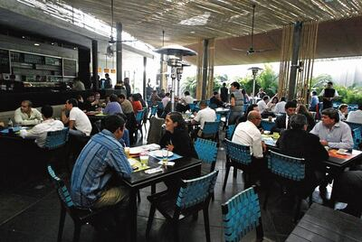
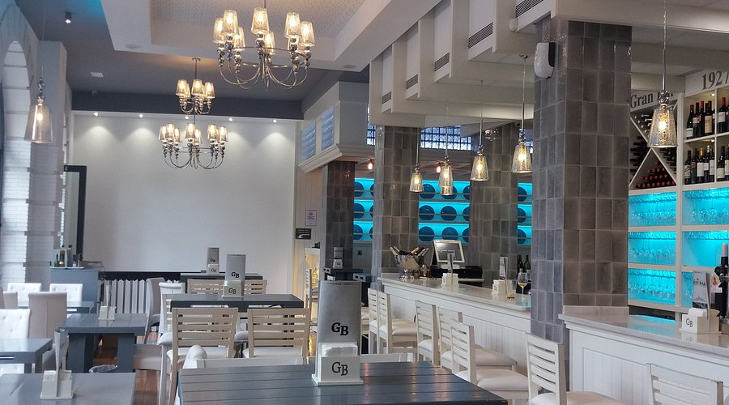
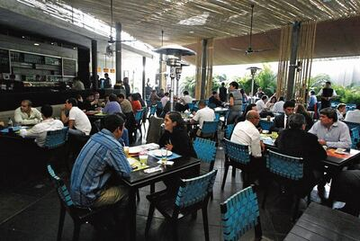
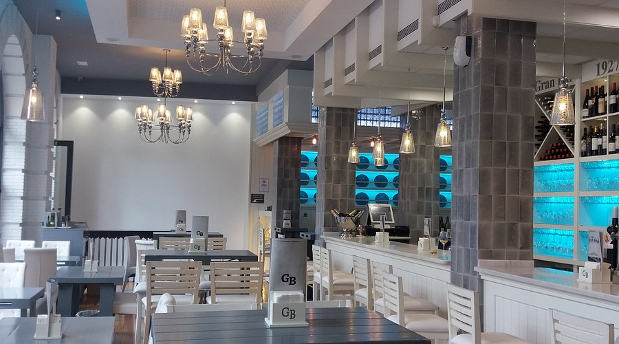

Nuestro Origen
HISTORIA
Fundado en el año 2020 por dos cocineros apasionados y liderado por su creador, conocido cariñosamente como Kenyper.
El restaurante fue concebido con un sueño claro: convertirse en un referente de la gastronomía marina en su región, combinando sabor, originalidad, tradición y atención cercana.
A lo largo de los años, hemos crecido gracias a la confianza de nuestros clientes, la dedicación del equipo y el compromiso permanente de brindar una experiencia única. Hoy seguimos innovando, sin olvidar nuestras raíces.
Nuestro Equipo
SOMOS
Más que un grupo de trabajo, somos una familia unida por un mismo propósito: hacerte disfrutar cada visita con el mejor sabor y atención. En nuestro restaurante, cada persona es una pieza clave que, con pasión, esfuerzo y mucha alegría, contribuye día a día para brindarte la mejor experiencia.
Nuestros Espacios
 



En “EL TENTACULÓN”, cada cliente es parte de nuestra historia. Te esperamos con los brazos abiertos y el sabor del mar en cada plato.